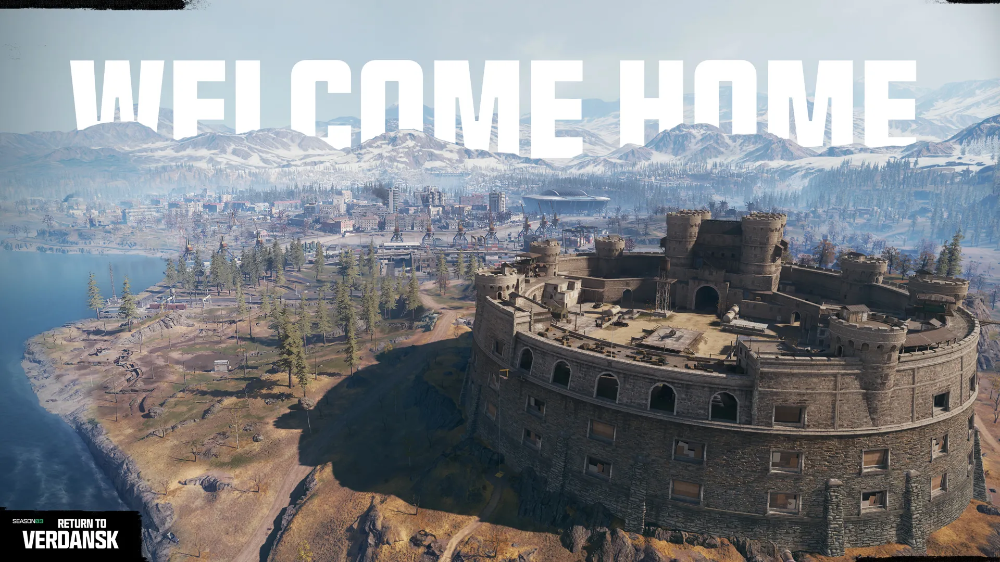
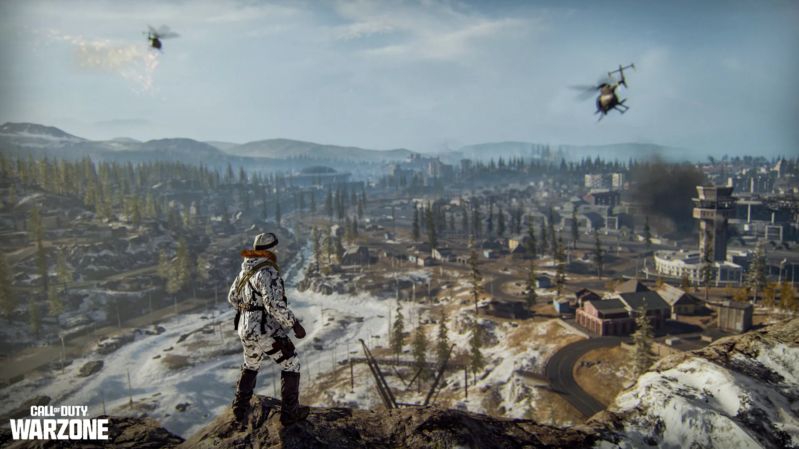

Bem-vindo ao lar
A experiência original de Call of Duty: Warzone Battle Royale está de volta com a chegada de Verdansk para os jogadores mergulharem no início da Temporada 03! Este é um retorno às raízes iniciais do Battle Royale do jogo, com uma jogabilidade básica e autêntica, uma reconstrução fiel do mapa grande, além de um número impressionante de melhorias na qualidade de vida.
Então, certifique-se de fazer o pré-carregamento do jogo antes do lançamento da Temporada 03 de Black Ops 6, em 2 de abril, que vem com uma Avaliação Gratuita de 24 horas incluindo todo o conteúdo premium disponível para todos, e o lançamento de Verdansk no Call of Duty: Warzone em 3 de abril!
Reconstruído do zero
Esta versão de Verdansk foi minuciosamente reconstruída do zero para oferecer a você a melhor experiência de battle royale possível. Essa experiência equilibra a imersão, mecânicas de movimento ajustadas e a jogabilidade característica que você lembra do Call of Duty: Warzone original, com um objetivo principal: reviver o clássico e nostálgico mapa de Verdansk que todos nós recordamos.
Desde explorar a vasta natureza selvagem das vilas do norte, a Base Militar e a Pedreira, até o primeiro pouso na Superloja ou no Hospital, ou sobreviver ao seu primeiro Gulag 1v1 na prisão, um grande esforço foi dedicado para tornar Verdansk uma atualização o mais exata, detalhada e autêntica possível.
Em termos mais simples, esta versão de Verdansk é 95% uma reconstrução do Verdansk de 2020, com cerca de cinco por cento da paisagem do mapa recebendo ajustes leves e melhorias na qualidade de vida. Jogadores veteranos que se recordam das temporadas de Modern Warfare 2019 devem pensar no Verdansk da Temporada 03 como o mapa lançado em março de 2020, com alguns elementos das temporadas posteriores daquele jogo adicionados – como as entradas da Estação de Metrô – e uma variedade de outras mudanças no mapa programadas para temporadas futuras…